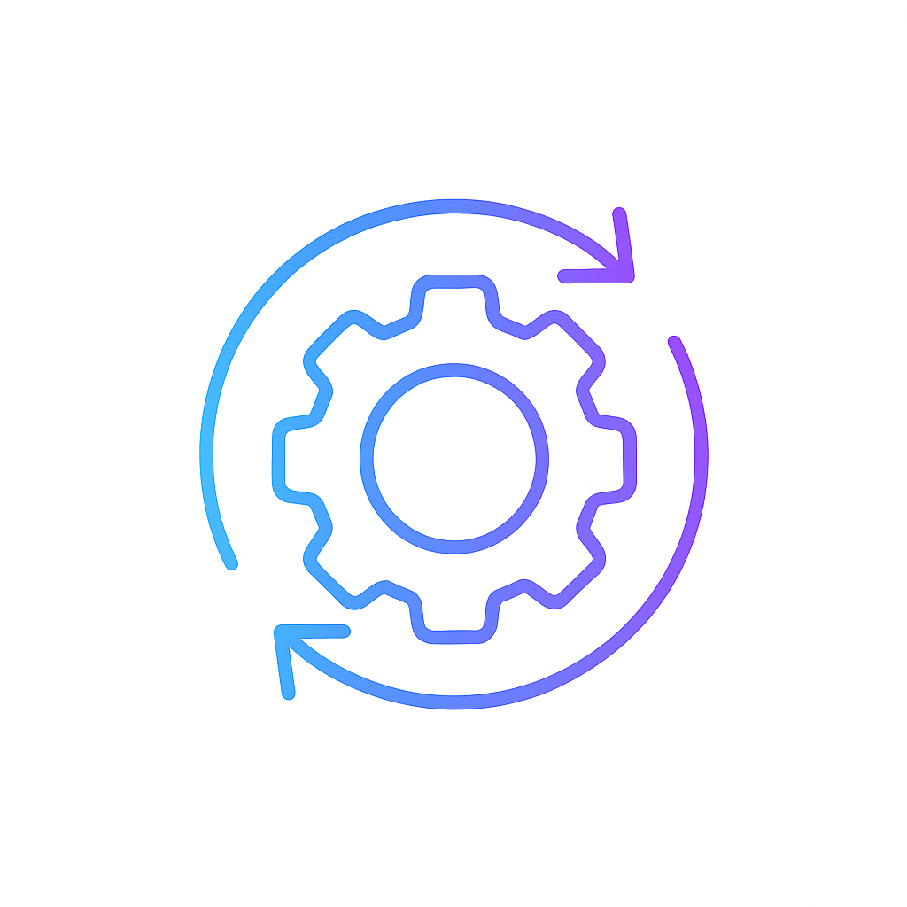

Artificial Intelligence
We investigate communication‑efficient federated learning, privacy preservation in machine learning, AI in medical applications and large language models.
Privacy
Our work extends to secure wireless communications, cyber‑physical systems and data‑driven optimizations, ensuring that sensitive information remains protected.

Optimization
We push the boundaries of quantum machine learning and explore privacy‑aware optimisation techniques for emerging computing platforms.